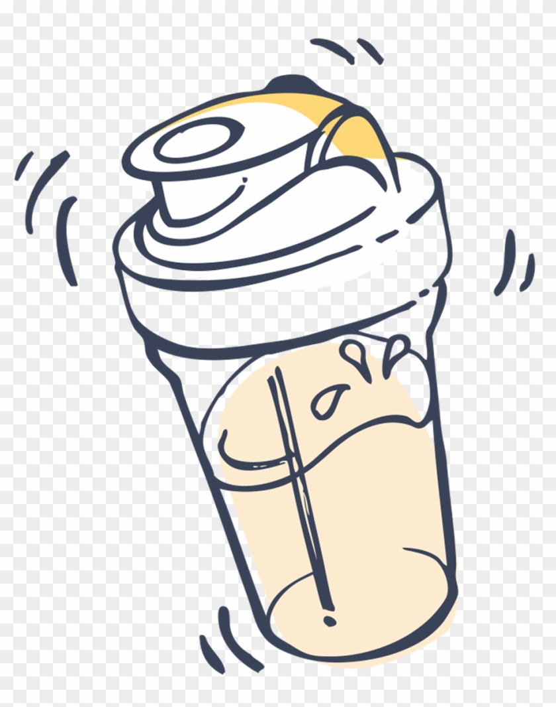

How to make a Protien Shake

I try to have this everyday and I need to have one right now... Anyways, this is a great supplement or substitution for a meal.
Think or it as adding protien to your body without having to deal with high amounts of fat or carbs!
You will nead...
- a mixing cup
- protien powder
- milk or water or even almond milk
- elbow grease
Steps
- dump a scoop of protien in the cup and fill the remainder with milk
- shake the cup to mix the two
- When you think you are done shaking... shake again for about 5 more mins then you are done